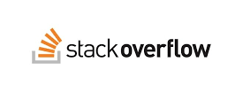
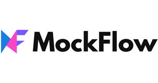
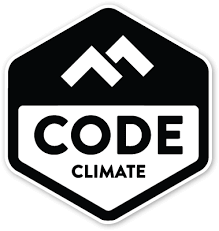

Sumário
1. IDEs de desenvolvimento
Fundamentais para um programador, IDEs de desenvolvimento são indispensáveis. Simplificando, é a ferramenta principal de programação, normalmente unindo adições especiais para suportar códigos de várias linguagens. A lista é extensa, mas alguns merecem destaque: Visual Studio Code, Atom, IntelliJ IDEA, PyCharm, PhpStorm, NetBeans, Eclipse e Komodo IDE. Cada um desses exemplos tem adições interessantes e devem ser analisados individualmente, mas ressaltamos que não são os únicos e há muitos outros igualmente importantes pela internet.
2. Versionador de Código
Um passo muito importante para qualquer desenvolvedor é aprender a usar um versionador de código, que basicamente vai ajudar a guardar histórico da evolução do desenvolvimento, guardar o código fonte em um local seguro para evitar perdas, além de ser essencial quando se trabalha em equipe. Existem vários versionadores, como o Team Foundation Server (TFS), Git, SVN, dentre outros. O principal é o Git, um sistema open source de controle de versões e gerenciamento de código fonte. Ele rastreia o histórico de seu projeto em um repositório e facilita manter vários repositórios de backup.

3. GitHub
Amplamente utilizado por programadores de todos os níveis de atuação, o GitHub é uma poderosa ferramenta para criação de projetos colaborativos, definição de etapas de restauração — os conhecidos commits —, gerenciamento de linhas de desenvolvimento, monitoramento de atividades e distribuição de projetos.

4. Stack Overflow
Uma comunidade forte de programadores é uma comunidade unida. O Stack Overflow é um dos principais fóruns de todo o mundo sobre o assunto, no qual profissionais compartilham dúvidas, opiniões e novidades acerca de vários tópicos do setor. Não é necessário fazer download, e o acesso é gratuito; basta criar uma conta e conferir as principais informações discutidas por lá.
5. Slack
O Slack é a principal ferramenta de comunicação de equipes (principalmente no meio da programação). A plataforma funciona como um meio de contato entre equipes, permitindo que grupos se reúnam de acordo com suas funções, objetivos e projetos. A ferramenta é paga e tem uso destinado a companhias ou pequenas empresas, mas é possível fazer um teste gratuito. Os valores sobre os workspaces devem ser negociados diretamente com a equipe de vendas do Slack.

6. Mockflow
O MockFlow é uma ferramenta que te permite criar mockups, um modelo visual, arrastando elementos e ainda te dá uma série de bibliotecas de componentes (bootstrap, materialize e etc) para que seu mockup já saia no estilo visual do seu projeto.
7. Code Climate
O Code Climate é uma ferramenta que avalia a qualidade de um código. Assim que você sobe o seu código para o repositório ele vai fazer uma análise dando uma nota para a qualidade do seu projeto (levando em conta código repetido, complexidade e etc).
